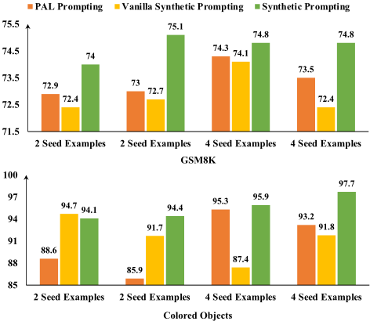

Synthetic Prompting：为大型语言模型生成 Chain-of-Thought 示范
论文针对 CoT/PAL 等提示方法的效果高度依赖示范（demonstrations）质量、而手工构造大量多样示范成本高昂的问题，提出 SYNTHETIC PROMPTING：仅用 2-8 条种子示例，让 LLM 交替执行 backward 与 forward 过程自我合成示范——backward 在主题词与目标复杂度约束下先生成带编号的推理链、再反推问题，保证问题可解且定义清晰；forward 为问题重写更精确、与问题一致的 PAL 风格代码推理链，并用多数投票过滤低置信样本。推理时用 SentenceBERT 对合成示例聚类，按“簇内复杂度”选出既多样又复杂的 8 条示范构建提示。在 GSM8K 等七个数值/符号/算法推理任务上（后端 text-davinci-003），方法最高取得 15.6% 的绝对提升，GSM8K 达 75.3%，合成问题复杂度 8.3 vs 5.4、错误率 8% vs 24%。核心结论：LLM 不仅能消费 in-context 示范，也能作为示范的生成器，用极少量种子自动扩充出更有效的提示资产。
Chain-of-thought 提示的性能严重依赖示范的质量与多样性，尤其是需要复杂、多样推理模式的任务；手工创建大量多样示例成本高且繁琐，仅依赖少量示范又会限制 LLM 的泛化与对不同测试输入的适配。论文要解决：在只能访问极少量（2-8 条）种子示例、且不训练模型的前提下，如何自动获得更有效的推理示范，以更好地激发 LLM 自身的推理能力。
SYNTHETIC PROMPTING 分两个阶段。(1) 示例合成阶段：以少量种子示例为提示，交替执行 backward 过程与 forward 过程。backward 过程在给定主题词（从模型自生成的 1,000 个单词名词表中随机采样）、目标复杂度（推理链代码行数，随机采样自种子复杂度区间加 c）条件下，先生成带编号步骤的推理链、再基于该推理链合成问题，从而保证问题可解、定义清晰；forward 过程为合成问题重新生成更精确的 PAL 风格代码推理链，每题采样 3 条推理链并按多数投票保留置信答案（超过半数一致），否则丢弃该问题。重复该过程约 1,000 次以扩充示例集。(2) 推理阶段：用 SentenceBERT（all-mpnet-base-v2）将合成示例在语义嵌入空间聚类（簇数等于示范数），从每簇选推理链最长（最复杂）的示例组成 8 条示范，以 PAL 风格提示 LLM 生成推理链，答案通过执行代码获得。
在 GSM8K、GSM-Hard、SVAMP、ASDiv、SingleOp、Colored Objects、Repeat Copy 七个数据集上，SYNTHETIC PROMPTING 一致优于 PAL prompting，最高取得 15.6% 的绝对准确率提升（后端为 text-davinci-003）
GSM8K 测试集准确率为 75.3%；对照：从 GSM8K 训练集用同样复杂度选择方案挑 8 条金标示范为 77.0%（高出 1.7%），而使用 Wei et al. (2022b) 手工构造的 8 条简单示范仅 71.8%
合成质量：相比 vanilla 版本，完整方法合成的问题复杂度更高（平均推理步数 8.3 vs 5.4）、错误率更低（8% vs 24%）；完整方法选出的示范全部正确，vanilla 版本含无法回答的问题
消融实验：去掉主题词、目标复杂度或“基于推理链合成问题”任一条件均导致性能下降；不基于推理链合成问题时 62.5% 的问题有缺陷，其中 80% 无法回答
示范选择：In-Cluster Complexity 优于 Random、Cluster Centroid、Similarity、In-Cluster Similarity、纯 Complexity 五种方案，复杂度类选择方案在两个推理任务上最有效
种子数量从 2 增至 8 未带来显著提升（尤其在 GSM8K 和 Repeat Copy 上）；vanilla 版本在 Repeat Copy（2 种子）上显著低于 PAL prompting，因选出的 2 条示范问题 ill-formed
与已有工作的区别：(1) 不同于 CoT、least-to-most、self-ask、decomposed prompting 等只设计推理工作流的方法，本文让 LLM 同时充当示范的“生成器”与“消费者”，用自合成示范增强 in-context 提示且无需进一步训练；(2) 不同于假设可访问大量金标训练输入的知识蒸馏工作，本文只假设极少量种子示例，且合成示例仅用于推理而非训练；(3) backward（先推理链后问题）的合成方向，以及主题词、目标复杂度、编号推理链三重条件控制是新的，消融证明缺一不可；(4) 提出 in-cluster complexity 示范选择方案，同时兼顾多样性与复杂性，优于单纯按复杂度或相似度选择。
相关度级别：high
命中能力域：3.2 提示工程 | 3.5 评测与可靠使用
理由：论文直接命中 3.2 提示工程：核心是 CoT/PAL 推理提示与 in-context learning 示范的自动合成与选择，属于“自动提示优化/提示词资产生产与复用”的代表性工作，其 backward-forward 合成范式和簇内复杂度选择策略都是团队可直接复用的提示技术。同时与 3.5 相关：用多数投票置信过滤保障合成示范可靠性、以自动合成替代人工标注降低提示资产构建成本，并对 6 种示范选择方案做了系统性实证比较。对“把模型用好而非训练模型”的团队而言，这是提示资产自动化生产的经典方法参考。
建议动作：深入精读并做内部分享
arXiv:2302.00618v1 [cs.CL] 2023年2月1日
Zhihong Shao 1 2 Yeyun Gong 3 Yelong Shen 4 Minlie Huang 1 Nan Duan 3 Weizhu Chen 4
大语言模型可以通过思维链（chain-of-thought, CoT）提示来执行各种推理任务，该提示方式通过逐步演示引导模型找到答案。然而，提示的质量取决于提供给模型的演示，而手工创建大量演示的成本很高。我们提出了 SYNTHETIC PROMPTING 方法，该方法利用少量手工构造的示例来提示模型自行生成更多示例，并从中选择有效的演示以引出更好的推理。我们的方法在反向过程与正向过程之间交替进行以生成新示例。反向过程生成与采样得到的推理链相匹配的问题，从而确保问题可解且清晰。正向过程为该问题生成更详细的推理链，从而提升示例的质量。我们在数值推理、符号推理和算法推理任务上评估了我们的方法，结果表明其性能优于现有的提示技术。
少样本演示（few-shot demonstrations），即任务的输入与输出示例，能够使大语言模型（Large Language Models, LLMs）在无需微调的情况下执行各种任务（Brown et al., 2020; Chung et al., 2022）。LLMs 可以通过使用思维链（chain-of-thought, CoT）提示进一步提升性能，该提示为任务提供中间推理步骤（Wei et al., 2022b; Kojima et al., 2022）。然而，LLMs 的少样本性能在很大程度上依赖于演示的质量，对于需要复杂且多样推理模式的推理任务尤其如此。为演示选择而人工构建一个庞大且多样的示例集成本高昂且过程繁琐，而依赖有限的演示集则可能阻碍 LLMs 对不同测试输入的泛化与适应。
1 清华大学 2 本工作在 MSRA 实习期间完成 3 微软亚洲研究院 4 微软。通讯作者：Minlie Huang < aihuang@tsinghua.edu.cn > 。
在本文中，我们提出了一种新方法 SYNTHETIC PROMPTING，该方法利用 LLMs 自身的知识与生成能力，通过自合成的示例来扩充有限的演示集，然后使用扩充后的集合在 LLMs 中引出更好的推理。具体而言，给定少量种子示例（每个示例由一个问题和一个推理步骤链组成），我们提示 LLM 通过在两个过程之间交替来生成更多示例：（1）反向过程（backward process），LLM 基于自生成的推理链合成一个问题，从而确保该问题可解答且定义明确；（2）正向过程（forward process），LLM 为合成的问题生成推理链，从而将推理链精炼得更加精确并与问题保持一致。我们重复这一过程，直到获得足够多的合成示例。为了从扩充后的集合中选出最有效的演示，我们提出了一种基于簇内复杂度（in-cluster complexity）的新选择方案，该方案通过对演示进行聚类，并从每个簇中选择最复杂的一个（即推理链最长的一个），来最大化演示的多样性与信息量。最后，我们用选出的演示提示 LLM 为测试问题生成推理链，然后利用该推理链得到答案。
我们在多种推理任务上评估了我们的方法，包括数值推理、算法推理和符号推理。遵循先前的少样本设置（Wang et al., 2022b; Suzgun et al., 2022），我们证明了我们的方法能够显著提升 LLMs 的性能，相比最先进方法取得了最高 15.6% 的绝对提升。
我们的主要贡献如下：
用于推理的扩充集。
上下文少样本学习（in-context few-shot learning） 借助大规模无监督预训练，大语言模型（LLMs）（Brown et al., 2020; Chowdhery et al., 2022; Zhang et al., 2022a）能够通过模仿上下文中的演示示例来学习执行任务（Shin et al., 2022）。为了提升对提示的鲁棒性，指令微调（instruction tuning）（Ouyang et al., 2022; Wei et al., 2022a; Sanh et al., 2022; Chung et al., 2022）被提出，该方法在多样化任务上训练语言模型，使其生成遵循给定指令的理想输出。随着可控性的提升，基于上下文学习（in-context learning）的应用蓬勃发展，包括文本生成（Yang et al., 2022; Gao et al., 2022a）、对话生成（Thoppilan et al., 2022）以及资源构建（West et al., 2022）。
面向推理的提示技术 思维链（chain-of-thought, CoT）提示（Wei et al., 2022b）并非让 LLMs 直接生成答案，而是提示 LLMs 经过逐步推理过程后得出答案，这在众多推理任务上大幅提升了性能。后续工作，如由易到难提示（least-to-most prompting）（Zhou et al., 2022）、自问（self-ask）（Press et al., 2022）和分解提示（decomposed prompting）（Khot et al., 2022），同样体现了问题分解的思想，即将一个复杂问题分解为一系列易于处理的子问题。所有这些方法生成的都是自然语言推理步骤，而这类步骤在计算和符号操作上表现不佳。PAL 提示（Gao et al., 2022b）和程序思维提示（program-of-thought prompting）（Chen et al., 2022）等技术提出用结构化代码来增强自然语言推理，在算术、符号和算法任务上取得了显著提升。
与提示工作流程正交，还有一些工作探索了什么样的演示示例才是有效的。相关度量包括：（1）多样性，即选择互补的演示示例，使模型能够融合不同的推理（Li et al., 2022; Ye et al., 2022b），或较少受某一类推理的偏倚影响（Zhang et al., 2022b）；（2）推理复杂度，即选择推理复杂度最高的演示示例，经验上发现其在数值推理上效果良好（Fu et al., 2022）；（3）与测试输入的相似性，即检索在结构上（Drozdov et al., 2022）或语义上（Liu et al., 2022b）相似的演示示例。为了同时保证演示示例的多样性和信息量，我们提出一种基于簇内复杂度（in-cluster complexity）的选择方案，从示例簇中选取最复杂的示例。所有这些选择方案都假定能够访问一组示例（无论是否经过标注）。
从 LLMs 进行知识蒸馏 一些研究将知识从 LLMs 蒸馏为符号知识，例如结构化常识知识（West et al., 2022）或任务特定示例（Liu et al., 2022a; Ye et al., 2022a; Huang et al., 2022）。这些研究至少具有以下特征之一：（1）假设能够获取训练集中的黄金输入，而无需自行生成；（2）基于工作者与 AI 之间的协作来蒸馏知识；（3）将蒸馏得到的知识用于训练。相比之下，我们假设仅有少量黄金示例可用，通过提示 LLM 自动合成更多示例，并研究能否利用合成示例来更好地激发模型自身的推理，而无需进一步训练。
为了利用大语言模型（LLM）执行推理任务，通常做法是：给定若干个各由一个问题和一条推理链组成的示例，将它们直接拼接成提示（prompt）用于推理。在本文中，我们转而将这些示例视为种子示例，并通过重复一个后向-前向（backward-forward）过程来提示 LLM 自动合成更多示例；其中，后向过程和前向过程分别生成问题和相应的推理链。在推理阶段，我们用自合成的演示示例来提示 LLM，以更好地激发模型自身的推理。演示示例通过一种新的选取方案进行选择，该方案可确保多样性和信息量。
利用种子演示示例，我们通过重复后向-前向过程自动合成更多示例。每个合成示例都是一个〈问题，推理链〉对。在我们的主要实验中，我们采用 PAL 风格的推理，即推理链为代码片段，答案通过执行代码获得。
在后向过程中，大语言模型（LLM）被提示先生成一条推理链，然后再生成一个问题。后向过程所输出的问题，是在给定主题词、目标推理复杂度以及自生成推理链的条件下合成得到的。图 1（左）展示了后向过程的一个提示示例，其中包含一些从种子示例和先前合成的示例中随机采样得到的演示示例。演示示例的数量与种子示例的数量相等。
主题词 我们假设每个推理问题都与一个特定的主题相关，并且不同主题
目标复杂度 主题词 演示示例 合成的问题 自生成的推理链
示例 1
# 我实现了一个名为 solution() 的 Python 函数，以正确解决以下问题。
# 该问题是关于 work 的。
def solution():
''' 5 行函数 '''
# 1 num_roses = 4
# 2 num_dahlias = num_roses + 7
# 3 num_flowers = num_roses + num_dahlias
# 4 result = num_flowers
# 5 return result
问题：花瓶里有 4 朵玫瑰。花瓶里的雏菊比玫瑰多 7 朵。花瓶里总共有多少朵花？
示例 2
# 我实现了一个名为 solution() 的 Python 函数，以正确解决以下问题。
# 该问题是关于 chef 的。
def solution():
''' 6 行函数 '''
# 1 bags_of_onions = 4
# 2 weight_per_bag = 50
# 3 cost_per_bag = weight_per_bag * 1.50
# 4 money_spent = num_bags_bought * cost_per_bag
# 5 result = money_spent
# 6 return money_spent
问题：一位厨师买了 4 袋洋葱。每袋重 50 磅。洋葱每磅 1.50 美元。这位厨师花了多少钱？
问题：辛西娅每晚吃一份冰淇淋。她购买的冰淇淋每盒装有 15 份，每盒价格为 4.00 美元。60 天后，她买冰淇淋总共要花多少钱？ def solution(): servings_per_night = 1 servings_per_carton = 15 cost_per_carton = 4.00 num_days = 60 num_servings = num_days * servings_per_night num_cartons = num_servings / servings_per_carton money_spent = cost_per_carton * num_cartons result = money_spent return result
示例 2 问题：一位厨师买了 4 袋洋葱。每袋重 50 磅。洋葱每磅 1.50 美元。这位厨师花了多少钱？演示
def solution(): num_bags_bought = 4 weight_per_bag = 50 cost_per_pound = 1.50 cost_per_bag = weight_per_bag * cost_per_pound money_spent = num_bags_bought * cost_per_bag result = money_spent return money_spent 合成推理链
可能需要不同类型的推理。例如，关于税收的问题可能涉及算术运算，而关于速度的问题可能涉及单位换算。为确保合成问题的多样性，我们提示模型针对给定的主题词生成一个问题，该主题词是从一个词集中随机采样的。词集的构建方式是：在来自种子示例的若干随机名词词之后，提示模型列出仅含单个token的名词单词。生成词集的指令为“列出50个名词单词。每个单词应仅包含一个token。不要重复已列出的单词。”，其后附上来自种子示例的不超过10个单词。我们重复这一过程，直到获得1,000个不同的单词，或提示重复达到100次。
目标复杂度 我们还希望控制合成问题的复杂度，因为更复杂的示例可能有助于模型学习更好的推理能力（Fu et al., 2022）。我们将问题的复杂度定义为回答该问题所需的推理步骤数，其中一个步骤是指由换行符分隔的一行代码。例如，图1（左）中示例1的复杂度为5，因为它包含5行代码。用于生成问题的目标复杂度从一个区间中随机采样，该区间从种子示例的最低复杂度一直跨越到最高复杂度加 c 。
自生成推理链 我们提示模型针对给定主题生成具有目标复杂度的推理链，然后基于该推理链生成问题。我们发现，与在没有推理链的情况下直接生成问题相比，这种方法能得到更容易回答、定义更明确的问题。为引导模型遵循目标复杂度，我们在演示示例中对每个推理步骤进行编号，例如图1（左）中的 #1 和 #2。我们过滤掉重复的问题、至少重复一个5-gram的问题，以及未提及给定主题词的问题。
前向过程旨在为后向过程中合成的问题生成推理链。图 1（右）展示了前向过程的一个示例提示，该提示由种子示例组成。与思维链（CoT）提示不同，PAL 提示不在提示中包含最终答案，因为答案可以通过执行生成的代码来获得，而不是从模型输出中提取。我们观察到，前向过程中生成的推理链比后向过程中生成的推理链更相关、更精确，因为它直接以问题为条件。
我们还希望确保模型对其由推理链产生的答案具有信心。遵循 Huang et al. (2022) 的做法，我们通过采样得到的推理链中指向相同答案的比例来衡量答案的置信度。对于问题 x，我们采样 m 条推理链，并得到它们的答案 {a1, a2, ..., am}。随后，我们通过多数投票找出最一致的答案：ˆ a = arg max a i ∑ m k =1 ✶ ( a i = a k ) 。如果有多于 m/2 条推理链指向 ˆa，我们就将其中最短的一条与合成的问题相关联；否则，我们丢弃该问题，因为模型未能为其生成具有信心的推理链。请注意，多数投票仅用于合成示例，而非用于推理（第 3.3 节）。这与 Wang et al. (2022a) 不同，后者将多数投票用于推理。
在推理阶段，我们从合成示例中选取一个子集作为模型的演示示例（demonstrations）。根据 Fu et al. (2022) 的研究，与基于相似性选取演示示例相比，基于复杂度选取演示示例能够提升模型在推理任务上的性能。此外，基于相似性选取演示示例可能会从演示示例中引入偏差（Zhang et al., 2022b; Lyu et al., 2022），尤其是当这些演示示例不正确时。再者，选取彼此互补的演示示例可能有助于模型融合来自不同推理类型的知识（Ye et al., 2022b; Zhang et al., 2022b）。
因此，我们提出一种基于簇内复杂度（in-cluster complexity）的选取方案，以获得既复杂又互补的演示示例。具体而言，我们使用 SentenceBERT (Reimers & Gurevych, 2019) 作为编码器，在语义嵌入空间中对合成示例进行聚类。簇的数量等于用于推理的演示示例的数量。随后，我们从每个簇中选取最复杂的示例作为演示示例。推理过程与 PAL prompting 等先前工作相同，即由模型对给定的提示进行补全。唯一的区别在于，我们提示中的演示示例是由种子示例合成得到的，而非固定为这些种子示例本身。
我们在七个不同推理任务的数据集上进行了实验。示例如表 1 所示。
数值推理 (1) GSM8K（Cobbe et al., 2021）是一个包含 1,319 道多样化小学数学应用题的数据集，旨在评估大语言模型（LLMs）的多步数学推理能力。(2) GSM-Hard 是 GSM8K 的更难版本，由 Gao et al. (2022b) 通过将问题中的数字替换为更大的数字而构建，旨在评估 LLMs 能否泛化到大数值。(3) SVAMP（Patel et al., 2021）是一个包含 1,000 道题目的数学应用题数据集，用于鲁棒性评估。(4) ASDiv（Miao et al., 2020）由 2,000 道多样化的数学应用题组成。(5) SingleOp（Koncel-Kedziorski et al., 2016）由 562 道数学应用题组成。
符号推理 来自 BigBench Hard（Suzgun et al., 2022）的 Colored Objects 任务，包含 2,000 道关于给定对象的位置和颜色属性的问题。
算法推理 Repeat Copy 任务同样来自 Big-Bench Hard，由 32 个测试示例组成。模型需要生成一个满足给定指令要求的词序列。
Suzgun et al. (2022) 和 Wang et al. (2022b) 均在少样本（few-shot）设置下，于包含大量任务的基准测试（benchmark）上对大语言模型（LLM）进行了评估，这些设置最多只能访问 4 个金标准示例。
| Datasets | Example |
|---|---|
| GSM8K | Patrick has three glue sticks that are partially used. One has 1/6 left, the second has 2/3 left and the third one has 1/2 left. If a glue stick is 12 millimeters long originally, what is the total length of the glue sticks that are not used? |
| Colored Objects | On the nightstand, you see several items arranged in a row: a blue crayon, a red notebook, a teal bracelet, a magenta sheet of paper, a silver dog leash, and a black booklet. What is the color of the item furthest from the dog leash? |
| Repeat Copy | Repeat election to the council three times, but after every other word say cool |
| Datasets | Example |
遵循上述设置，我们默认假设可以从每个数据集中随机获取 2 个或 4 个示例。对于数值推理任务，我们还实验了由 Wei et al. (2022b) 人工构造、并被后续多篇论文（Fu et al., 2022; Wang et al., 2022a; Gao et al., 2022b）采用的 8 个示例。我们还使用了由 Gao et al. (2022b) 标注的 PAL 风格推理链。
不含合成的提示基线方法利用所有提供的金标准示例来构建用于推理的提示。SYNTHETIC PROMPTING 及其变体则利用所提供的示例来合成示例，并基于簇内复杂度选择 8 个合成演示示例，除非另有说明。
种子示例和合成提示已在补充材料中提供。
直接提示（Direct Prompting） 直接提示（Brown et al., 2020）通过输入-答案对的演示示例，提示大语言模型（LLM）直接生成答案。
思维链（CoT）提示 思维链提示（Wei et al., 2022b）能有效激发 LLM 的推理能力，该方法提示 LLM 生成自然语言推理步骤，随后给出答案。
PAL 提示 PAL 提示（Gao et al., 2022b）是思维链提示的一种变体，利用结构化代码来改进推理。图 1（右）给出了两个示例。它并不提示 LLM 在补全内容中包含最终答案；答案是通过执行代码获得的。这种提示技术已在众多推理任务上取得了最先进的结果。
原始 SYNTHETIC PROMPTING 这是 SYNTHETIC PROMPTING 的一种变体，其不同之处在于，用于问题合成的提示仅由种子示例中的问题构成。换言之，新问题通过模仿种子问题来合成，不附加任何其他条件。
我们采用了 PAL 风格的推理链，这类推理链是结构化代码，其中的注释即为自然语言推理步骤。我们使用 InstructGPT（Ouyang et al., 2022）的 text-davinci-003 版本作为后端 LLM，同时用于合成和推理。合成时我们使用 top-p 采样（Holtzman et al., 2020），温度设为 0.7；推理时使用贪心解码，温度设为 0。所有数值推理数据集共享同一组种子示例，这些种子示例要么从 GSM8K 中随机采样（当种子数量为 2 或 4 时），要么取自 Wei et al. (2022b)（当种子数量为 8 时）。对于其他任务的数据集，种子示例则从其各自的数据集中随机采样。我们遵循各自的标注协议，人工为种子示例同时标注了 CoT 风格的推理链和 PAL 风格的推理链。标注结果见补充材料。对于每组种子示例，我们通过重复后向-前向合成 1,000 次来合成更多示例。目标复杂度的范围从种子示例的最低复杂度到最高复杂度加 c；在数值推理任务中 c 设为 4，在其他数据集上设为 2。在前向合成中，每个问题采样的推理链数量为 3。用于聚类的编码器为 all-mpnet-base-v2。
如表 2 所示，SYNTHETIC PROMPTING 始终优于 PAL 提示，绝对提升最高可达 15.6%，这表明可以利用自合成的示例来更好地激发大语言模型（LLM）自身的推理能力，其性能超越了仅使用种子示例的做法。
尽管原始版 SYNTHETIC PROMPTING 也使用了合成示例，但它未能持续地超越 PAL 提示。在包含需要复杂推演的问题的 GSM8K 和 GSM-Hard 上，原始版 SYNTHETIC PROMPTING 几乎无法超越 PAL 提示，这是因为它没有显式控制合成示例的推理复杂度，倾向于合成在复杂度和信息量上都与种子示例相似的示例。值得注意的是，在仅有 2 个种子示例的 Repeat Copy 上，原始版 SYNTHETIC PROMPTING 的表现显著低于 PAL 提示。我们发现所选的 2 个示例中存在问题形式不规范的情况，例如“将句子 'The sun is bright' 重复五次，每次对不同的词加以不同的强调”。这可能是因为问题是在未显式考虑其推理链的情况下合成的。第 4.6.1 节展示了通过多种条件控制问题合成所带来的收益。
| Datasets.Previous Fine-tuned SOTA CoT PaLM 540B.Previous Fine-tuned SOTA CoT PaLM 540B.# Gold/Seed Examples | GSM8K.55 α.56.9.2 | GSM8K.55 α.56.9.4 | GSM8K.55 α.56.9.8 | GSM-Hard.-.-.2 | GSM-Hard.-.-.4 | GSM-Hard.-.-.8 | SVAMP.57.4 β.79.0.2 | SVAMP.57.4 β.79.0.4 | SVAMP.57.4 β.79.0.8 | ASDiv.75.3 γ.73.9.2 | ASDiv.75.3 γ.73.9.4 | ASDiv.75.3 γ.73.9.8 | SingleOp.-.-.2 | SingleOp.-.-.4 8 | SingleOp.-.-.2 | Colored Objects.- -.- -.4 | Colored Objects.- -.- -.2 | Repeat Copy.- -.- -.4 |
|---|---|---|---|---|---|---|---|---|---|---|---|---|---|---|---|---|---|---|
| Methods Using Gold Examples Only | Methods Using Gold Examples Only | Methods Using Gold Examples Only | Methods Using Gold Examples Only | Methods Using Gold Examples Only | Methods Using Gold Examples Only | Methods Using Gold Examples Only | Methods Using Gold Examples Only | Methods Using Gold Examples Only | Methods Using Gold Examples Only | Methods Using Gold Examples Only | Methods Using Gold Examples Only | Methods Using Gold Examples Only | Methods Using Gold Examples Only | Methods Using Gold Examples Only | Methods Using Gold Examples Only | Methods Using Gold Examples Only | Methods Using Gold Examples Only | Methods Using Gold Examples Only |
| Direct | 15.4 | 16.1 | 16.8 | 4.4 | 4.3 | 4.4 | 67.0 | 67.2 | 68.3 | 69.8 | 69.8 | 71.5 | 92.5 | 92.2 92.2 | 58.7 | 81.7 | 31.3 | 43.8 |
| CoT | 61.8 | 62.2 58.2 | 23.6 | 23.3 | 23.0 | 79.5 | 78.2 | 79.0 | 75.1 | 77.7 | 80.2 | 90.7 93.4 | 93.4 | 81.7 | 88.8 | 56.3 | 62.5 | |
| PAL | 72.5 | 73.1 | 71.8 | 62.8 | 62.9 | 60.7 | 80.2 | 79.6 | 81.8 | 81.0 | 79.4 | 81.1 | 93.4 92.5 | 94.1 | 82.7 | 94.4 | 71.9 | 81.3 |
| Methods Leveraging Synthetic Demonstrations | Methods Leveraging Synthetic Demonstrations | Methods Leveraging Synthetic Demonstrations | Methods Leveraging Synthetic Demonstrations | Methods Leveraging Synthetic Demonstrations | Methods Leveraging Synthetic Demonstrations | Methods Leveraging Synthetic Demonstrations | Methods Leveraging Synthetic Demonstrations | Methods Leveraging Synthetic Demonstrations | Methods Leveraging Synthetic Demonstrations | Methods Leveraging Synthetic Demonstrations | Methods Leveraging Synthetic Demonstrations | Methods Leveraging Synthetic Demonstrations | Methods Leveraging Synthetic Demonstrations | Methods Leveraging Synthetic Demonstrations | Methods Leveraging Synthetic Demonstrations | Methods Leveraging Synthetic Demonstrations | Methods Leveraging Synthetic Demonstrations | Methods Leveraging Synthetic Demonstrations |
| Vanilla SYNTHETIC SYNTHETIC | 72.6 | 72.7 | 71.6 62.5 | 59.3 | 60.0 | 83.5 | 80.6 | 81.4 | 81.5 | 80.8 | 80.8 | 92.7 | 91.5 94.3 | 92.7 | 93.1 | 53.1 | 81.3 | |
| 74.7 | 75.3 | 73.9 | 63.1 | 64.7 | 64.7 | 82.0 | 80.5 | 81.8 | 81.1 | 80.6 | 80.7 | 93.6 | 93.4 95.2 | 93.8 | 97.3 | 87.5 | 84.4 |
| Datasets.Previous Fine-tuned SOTA CoT PaLM 540B.Previous Fine-tuned SOTA CoT PaLM 540B.# Gold/Seed Examples | GSM8K.55 α.56.9.2 | GSM8K.55 α.56.9.4 | GSM8K.55 α.56.9.8 | GSM-Hard.-.-.2 | GSM-Hard.-.-.4 | GSM-Hard.-.-.8 | SVAMP.57.4 β.79.0.2 | SVAMP.57.4 β.79.0.4 | SVAMP.57.4 β.79.0.8 | ASDiv.75.3 γ.73.9.2 | ASDiv.75.3 γ.73.9.4 | ASDiv.75.3 γ.73.9.8 | SingleOp.-.-.2 | SingleOp.-.-.4 8 | SingleOp.-.-.2 | Colored Objects.- -.- -.4 | Colored Objects.- -.- -.2 | Repeat Copy.- -.- -.4 |
我们还观察到，将种子示例数量从 2 增加到 8 并未带来显著的性能提升，尤其是在 GSM8K 和 Repeat Copy 上。可能的原因有两点：(1) 示例合成会受到种子示例的偏置。在种子有限的情况下，合成示例可能不够多样，因而对一部分测试问题仍然无济于事。(2) 尽管我们提出的示例选择方案是有效的（分析见第 4.6.2 节），但它可能是次优的，未能充分利用合成示例。
我们主要在 GSM8K 和 Colored Objects 任务上进行了消融实验。
| Datasets.# Seed Examples | GSM8K.2 | GSM8K.4 | Colored Objects.2 | Colored Objects.4 |
|---|---|---|---|---|
| SYNTHETIC PROMPTING | 74.7 | 75.3 | 93.8 | 97.3 |
| w/o Topic Word | 73.9 | 73.2 | 80.2 | 92.9 |
| w/o Target Complexity | 71.6 | 72 | 93.1 | 94.5 |
| w/o Reasoning Chain | 72.9 | 73.8 | 86 | 92.2 |
| Datasets.# Seed Examples | GSM8K.2 | GSM8K.4 | Colored Objects.2 | Colored Objects.4 |
在后向合成（backward synthesis）中，我们让大语言模型（LLM）采样一个问题。表 4：使用 4 个种子示例在 GSM8K 上的分析，关于后向问题合成中使用的条件如何影响合成示例的质量。多样性通过合成示例之间的成对余弦相似度来度量。复杂度度量合成示例（左）与所选演示（右）的平均推理复杂度，二者以 / 分隔。正确性是指所选合成演示中正确的比例。
| Method | Diversity | Complexity | Correctness |
|---|---|---|---|
| SYNTHETIC PROMPTING | 0.68 | 8.23 / 12.5 | 100.0% |
| w/o Topic Word | 0.85 | 9.4 / 13.4 | 100.0% |
| w/o Target Complexity | 0.73 | 5.0 / 7.6 | 87.5% |
| w/o Reasoning Chain | 0.68 | 5.6 / 12.3 | 37.5% |
| Method | Diversity | Complexity | Correctness |
该问题以一个主题、一个目标复杂度和一条采样得到的推理链为条件。为了分析每种条件对问题合成的影响，我们移除了提示中相应的行。值得注意的是，在移除目标复杂度时，推理步骤的编号标记也会一并被移除。如表 3 所示，移除任何条件都会导致模型在 GSM8K 和 Colored Objects 上的性能下降。
我们进一步研究了不同条件如何影响合成示例的质量，具体从以下几个方面进行衡量：(1) 多样性，以每个合成示例与其他示例之间最大成对余弦相似度的平均值来度量；(2) 复杂度，以推理步骤的平均数量来度量；(3) 正确性，以用于推理的演示中正确的比例来度量。表 4 给出了在 GSM8K 上的分析结果。移除主题词会使合成示例的多样性降低。所选演示的推理模式也较为有限；尽管所有演示都是正确的，但 62.5% 的问题都围绕折扣或税展开。移除目标复杂度会生成简单得多的合成示例。在不以推理链为条件的情况下合成问题会对正确性产生负面影响；62.5% 的问题存在缺陷，其中 80% 无法回答，例如：“一幅图像由一个 4x4 的整数矩阵表示。矩阵的每个单元格中包含一个介于 0 到 255 之间的整数。矩阵中所有整数的平均值是多少？”。
值得注意的是，尽管在不以推理链为条件的情况下合成问题时，我们也在提示中加入了目标复杂度，但所得问题所需的推理步骤往往少于 SYNTHETIC PROMPTING，这表明以带编号的推理步骤为条件可以更好地控制推理复杂度。
| 0 | 1 | 2 | 3 | 4 |
|---|---|---|---|---|
| Datasets | GSM8K | Colored | Objects | |
| # Seed Examples | 2 | 4 | 2 | 4 |
| Random | 73.4 | 73.1 | 83.0 | 90.0 |
| Cluster Centroid | 73.1 | 73.0 | 91.2 | 93.6 |
| Similarity | 72.9 | 74.0 | 87.0 | 94.2 |
| In-Cluster Similarity | 72.9 | 73.2 | 89.3 | 95.4 |
| Complexity | 74.1 | 74.3 | 92.7 | 97.5 |
| In-Cluster Complexity | 74.7 | 75.3 | 93.8 | 97.3 |
| 0 | 1 | 2 | 3 | 4 |
为了充分利用合成示例，拥有一种有效的选择方案至关重要。我们评估了以下 6 种选择方案：(1) Random：随机选择演示示例；(2) Cluster Centroid：选择最接近每个聚类中心的示例；(3) Similarity：根据余弦相似度检索最相似的示例；(4) In-Cluster Similarity：从每个簇中选择最相似的示例；(5) Complexity：选择推理步骤最多的示例；(6) In-Cluster Complexity：从每个簇中选择最复杂的示例。
表 5 给出了对比结果。尽管大多数选择方案都取得了优于 PAL 提示的性能，但基于复杂度的选择方案在两个推理任务上最为有效，而其他一些方案（如 Random）则远远落后。我们提出的 In-Cluster Complexity 优于 Complexity，这表明了使用多样化且复杂的演示示例所带来的好处。
为了研究 SYNTHETIC PROMPTING 对种子示例的敏感程度，我们在另外两组随机选取的种子示例上重复了实验。图 2 展示了我们的敏感性分析。在不同的运行中，SYNTHETIC PROMPTING 始终优于 PAL 提示。然而，我们观察到，PAL 提示性能更好的种子示例并不一定能带来更好的 SYNTHETIC PROMPTING 性能。

为了衡量使用合成示例与使用来自大量精心整理示例的金标示例之间的性能差距，我们分别采用两种基于复杂度的选择方案（即第 4.6.2 节中的 Complexity 和 In-Cluster Complexity）从 GSM8K 的训练集中选取了 8 个示例。由于训练示例标注的是自然语言推理链（即思维链（CoT）式推理），我们以自然语言推理步骤的数量作为推理复杂度来进行基于复杂度的选择，并针对 PAL 提示人工为所选示例标注了 PAL 式推理链。由于 GSM8K 的训练示例具有多样性，Complexity 和 In-Cluster Complexity 都能选出多样且信息丰富的示例，并在 GSM8K 测试集上取得了 77.0% 的准确率，比我们 75.3% 的准确率绝对高出 1.7%。如补充材料所示，与我们的合成示例相比，所选出的金标示例在逻辑上更为复杂、推理不那么直白，这可能对大语言模型（LLMs）更具信息量。
值得注意的是，使用 Wei et al. (2022b) 中未经提示工程而由人工编写的 8 个简单示例，会导致更低的准确率 71.8%。这表明示例确实很重要。在
问题：如果 5 个人每人有 10 个想法，其中 5 个想法是创新性的，每个需要 2 分钟来开发，另外 5 个想法是非创新性的，每个需要 1 分钟来开发，那么这 5 个人开发完所有 10 个想法总共需要多少分钟？
给定主题词：办公室
问题：一间办公室宽 20 英尺、长 30 英尺、高 10 英尺。它有两扇窗户，每扇宽 5 英尺、高 6 英尺，还有一扇门，宽 3 英尺、高 8 英尺。办公室墙面的总面积是多少？
给定主题词：画廊
问题：一家画廊有 10 幅画作、9 座雕塑、6 张照片和 4 件混合媒介作品。画作每幅 200 美元，雕塑每座 500 美元，照片每张 100 美元，混合媒介作品每件 150 美元。你可以享受 15% 的折扣，并且必须支付 5% 的税。你总共需要支付多少钱？
表 6：来自 GSM8K 的一组种子示例，以及分别由 SYNTHETIC PROMPTING 及其原始版本（vanilla）选出的合成示例。为简洁起见，我们仅展示问题，因为它们的推理链都是正确的，除了原始版 SYNTHETIC PROMPTING 的第三个问题无法回答。
只能获得有限且可能较为简单示例的场景下，自动合成示例以选出更有效的示例，是引导 LLMs 产生更好推理的一种有前景的方法。
为了研究合成示例的质量，我们在 GSM8K 上进行了人工评估。我们分别评估了由 SYNTHETIC PROMPTING 和原始版（vanilla）SYNTHETIC PROMPTING 合成的 25 个随机示例。与原始版 SYNTHETIC PROMPTING 相比，SYNTHETIC PROMPTING 合成的问题复杂度更高（8.3 对 5.4），且错误率更低（8% 对 24%）。
我们进一步分析了所选合成示例的质量。对于 SYNTHETIC PROMPTING，所有被选出的示例都是正确的；而其原始版本中有一个问题无法回答，另一个问题则推理错误。
表 6 展示了两个种子示例以及一些合成示例。对于原始版 SYNTHETIC PROMPTING，前两个问题在逻辑上与种子问题较为接近，而第三个问题无法回答。借助 SYNTHETIC PROMPTING，LLM 能够合成切题且需要新颖推理模式的问题，例如第二个关于办公室的问题就需要几何推理。
我们提出了 SYNTHETIC PROMPTING，这是一种利用少量示例进行大语言模型（LLM）推理的新技术，它与以往工作的不同之处在于：除了将模型作为上下文示例的消费者之外，还将其用作额外示例的生成器。我们表明，通过提示 LLM 合成更多示例，与思维链（CoT）提示和 PAL 等现有提示方法相比，可以提升其在数值、符号和算法任务上的推理性能。
问题：Carol 的书里有 20 个签名，Jennifer 有 44 个。姐妹俩还有三周的暑假，她们决定在暑假结束前两人合计达到 100 个签名。姐妹俩还需要收集多少个签名才能达到目标？
问题：一个由 4 名油漆工组成的团队为一栋豪宅施工，每天工作一天的 3/8，持续了 3 周。每名油漆工总共投入了多少小时的工作？
问题：80 人参加了一场聚会，其中 40 人是男性，40 人是女性。男性中有 10 人已婚，女性中有 20 人已婚。聚会上有多少名单身人士？
问题：由 4 名油漆工组成的团队为一栋豪宅施工，每天工作一天的 3/8，持续了 3 周。如果每名油漆工的时薪为 25 美元，那么这组油漆工总共赚了多少钱？
问题（无法回答）：Smith 老师的数学课上，80 名学生参加了一次测验，平均分是 75%。有多少名学生得了 95% 或更高的分数？
提示。